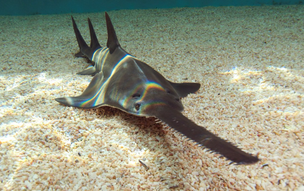
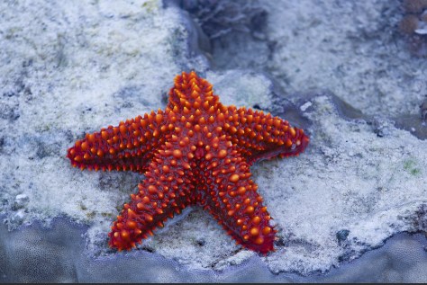
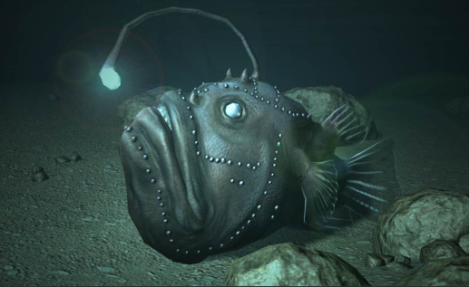
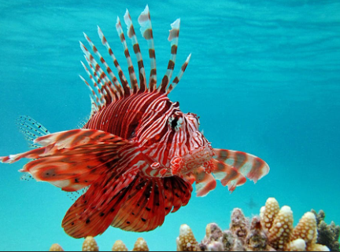

Certains poissons sont très bien équipés pour capturer leurs proie sans leurs laisser la moindre chance
Le museau en forme de scie de ce poisson-scie à gauche, est une arme redoutable pour fouiller le sable. Grace à ses bras munis de ventouses, l'étoile de mer à droiten arrive à ouvrir les coquilages.
Ce poisson-pecheur à gauche a sur la tete, une cane à peche pour attraper ses proies. Ce poisson-lion paralyse ses proies avec ses épines venimeuses puis les avale.